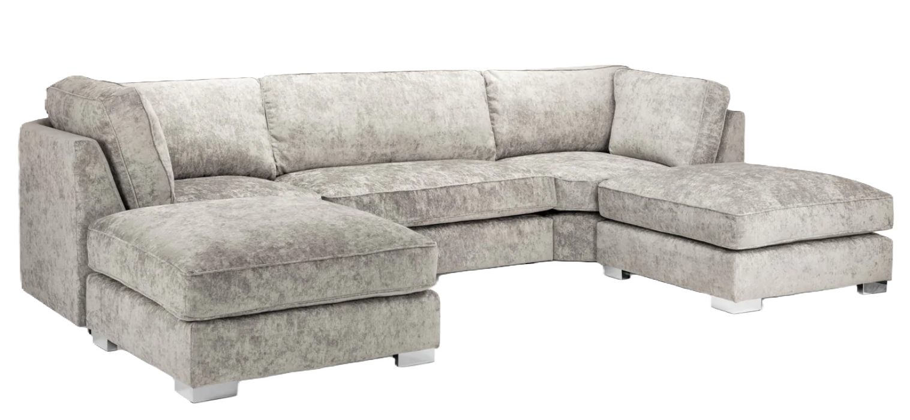

Retapițare Mobilă Targu Mures
Te-ai atașat de o canapea veche, un fotoliu moștenit sau un set de scaune care nu se mai potrivesc decorului actual, dar care au o structură solidă? Nu le arunca! La Vali Handyman în Targu Mures, oferim servicii complete și profesionale de retapițare mobilă( canapea, scaune, fotolii, banchete, coltare living si bucatarie), transformând piesele tale vechi în capodopere proaspete și personalizate, gata să-ți înfrumusețeze spațiul pentru mulți ani de acum înainte.
Retapițarea nu este doar o reparație; este o artă a reînnoirii, o soluție ecologică și, adesea, mai economică decât achiziționarea de mobilier nou de calitate comparabilă.
Ce include serviciul nostru detaliat de retapițare mobilă?

1. Evaluare și Consultanță Personalizată:
- Insulația Mobilierului: Începem cu o evaluare amănunțită a stării actuale a mobilierului tău. Verificăm structura de rezistență (rama de lemn), suspensiile (arcuri, chingi), umplutura (burete, puf) și tapițeria existentă.
- Discuție și Opțiuni: Discutăm despre viziunea ta, stilul dorit și bugetul disponibil. Îți oferim sfaturi profesionale privind cea mai bună abordare pentru piesa respectivă.
- Selecția Materialelor: Te ghidăm în alegerea materialului de tapițerieperfect dintr-o gamă variată de opțiuni:
- Țesături: Stofe rezistente la uzură (jacquard, chenille, microfibră), catifea elegantă, in natural, bumbac, țesături cu imprimeuri moderne sau clasice.
- Piele Naturală/Ecologică: Pentru un aspect luxos și o durabilitate crescută.
- Culori și Texturi: O paletă bogată de culori și texturi pentru a se potrivi perfect decorului tău existent sau pentru a crea un contrast îndrăzneț.
- Estimare Costuri: Îți oferim o cotație transparentă și detaliată a costurilor, bazată pe complexitatea lucrării și materialele alese.
2. Procesul de Retapițare Profesională:
- Demontarea Tapiteriei Vechi: Îndepărtăm cu grijă și profesionalism toată tapițeria existentă și vechea umplutură.
- Verificarea și Reparația Structurii: Verificăm și consolidăm rama de lemn, reparăm îmbinările slăbite, înlocuim arcurile sau chingile rupte/uzate. Ne asigurăm că scheletul mobilierului este solid și stabil.
- Înlocuirea Umpluturii: Recondiționăm sau înlocuim integral umplutura (burete de densitate potrivită, puf, vată siliconată), pentru a reda confortul și forma inițială a piesei.
- Croirea și Cusutul: Croim cu precizie noul material conform șabloanelor originale ale mobilierului. Coasem manual sau la mașină, cu atenție la detalii, pentru a asigura cusături rezistente și un aspect impecabil.
- Aplicarea Noii Tapițerii: Montăm noua tapițerie, întinzând materialul perfect, fără cute sau denivelări, fixându-l corespunzător.
- Finisaje și Detalii: Refacem toate detaliile originale (nasturi, borduri, capse decorative, picioare de mobilier) sau aplicăm noi accesorii, conform cerințelor tale.
3. Tipuri de Mobilier pe care le Retapițăm:
- Canapele: De la cele clasice la cele modulare, inclusiv colțare și canapele extensibile.
- Fotolii și Șezlonguri: Orice tip de fotoliu, de la cele clasice la cele moderne sau de birou.
- Scaune: Scaune de dining, scaune de bucătărie, scaune de birou, taburete.
- Banchete și Bănci Tapițate.
- Capete de pat tapițate.
De ce să alegi Vali Handyman pentru retapițare în Cluj?
- Măiestrie Artizanală: Nu suntem doar reparatori, suntem artizani. Lucrăm cu pasiune și atenție la fiecare detaliu, pentru un rezultat de excepție.
- Calitate Superioară: Utilizăm doar materiale de cea mai înaltă calitate, de la structură la tapițerie, pentru a garanta durabilitatea și frumusețea pe termen lung.
- Soluții Personalizate: Fiecare proiect este unic și ne adaptăm viziunii tale, transformând mobilierul exact așa cum îți dorești.
- Economie și Durabilitate: Retapițarea este o modalitate excelentă de a economisi bani comparativ cu achiziția de mobilier nou de calitate similară, contribuind în același timp la un stil de viață sustenabil.
- Comoditate: Ne ocupăm de întregul proces, de la preluarea piesei (dacă este cazul) până la livrarea mobilierului recondiționat, direct la tine acasă.
Redă viață mobilierului tău preferat și bucură-te de confort și stil! Contactează Vali Handyman acum la telefon +40755873335 pentru o consultație gratuită și o ofertă personalizată pentru serviciul de retapițare mobilă în Targu Mures!